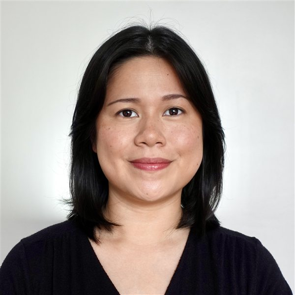

Columbia Business School
MBA, Finance & Strategy, May 2027
Membership:
Management Consulting Association
Asian Business Association
Hospitality and Travel Association
Wine Society

MBA, Finance & Strategy, May 2027
Membership:
BS, Management Engineering, May 2018
Honors Program – highly selective; selected from top ~15% of applicants
Leadership: Ateneo Chapter for UNICEF – organized community engagement programs for indigenous tribes
Leading cloud computing platform; AWS Energy manages the energy portfolio powering Amazon’s data centers
Full-service investment house: investment banking, wealth management, and securities brokering services
Largest universal bank in the Philippines
Amazon Web Services · 2026
Built an AI-powered tool that extracts key commercial terms from renewable energy power purchase agreements and feeds them into valuation models, reducing manual review time for analysts.
My role: Designed and built the tool during my Finance Manager internship.
Impact: Cut contract valuation turnaround from 8+ hours to under 1 hour and standardized financial models across a $41.3B portfolio.
AB Capital · Manila
Advised on a $145M sell-side process for the Philippines’ largest private education network.
My role: Managed stakeholder communication, directed cross-functional due diligence, developed the valuation model, and synthesized findings into investor materials.
Impact: Ran due diligence across 15+ Asia-based private equity firms, with investor materials that highlighted the company’s strategic value.
AB Capital · Manila
Wrote an equity research report on a gold mining company, covering valuation, commodity price outlook and investment thesis.
My role: Lead analyst and author.
Impact: Launched coverage of mining as a new sector; the DCF-based research contributed to a 35% stock price increase over six months.
US Citizen
Led regional and local workshops on leadership and peace education for UNESCO-affiliated group (2015 – 2018)